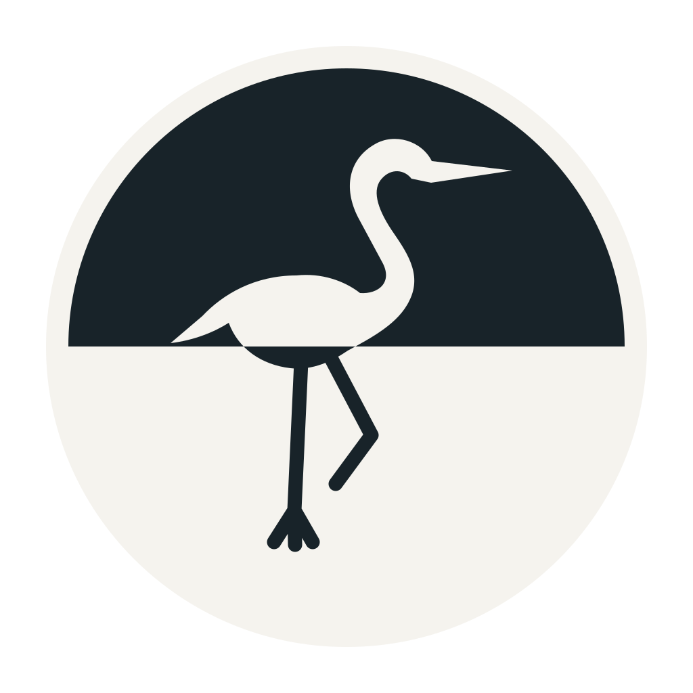

栖声 A PLACE TO LISTEN
YOUR ROOM, IN A DIFFERENT MOOD
今晚，让旋律轻一点。
一杯温暖，一段不必赶路的时光。
让窗外也有声音此刻，静谧
00:00
00:00
点击曲名，换一种心情 ↗正在连接声音库
THE WAY YOUR ROOM FEELS
把房间，调成喜欢的样子。
窗边咖啡
OUTSIDE THE WINDOW
窗外的声音
音乐与环境声一起输出
萤火使用夏夜虫鸣；落雪使用柔和风声。录音经过循环接缝、滤波及响度处理。
AN EVER-EVOLVING COLLECTION
正在生长的声音库
曲库的声音分布
允许自动补充 开关仅影响新曲生成
共享 10 GB · 完整播放 4 次后退休 · 最近 150 次播放参与去重